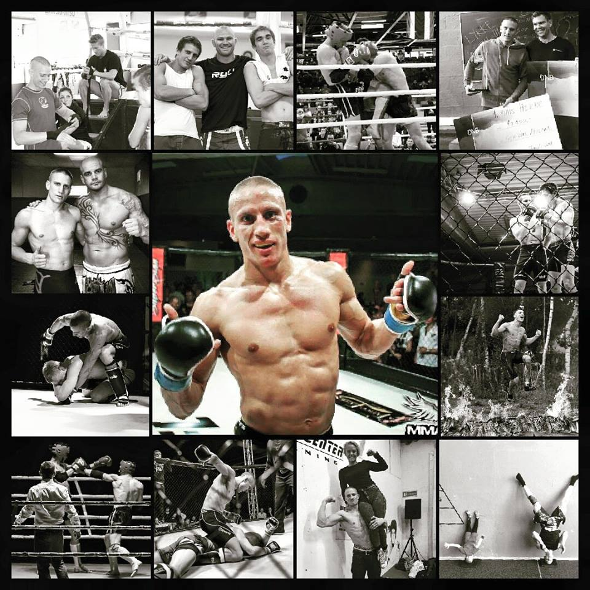
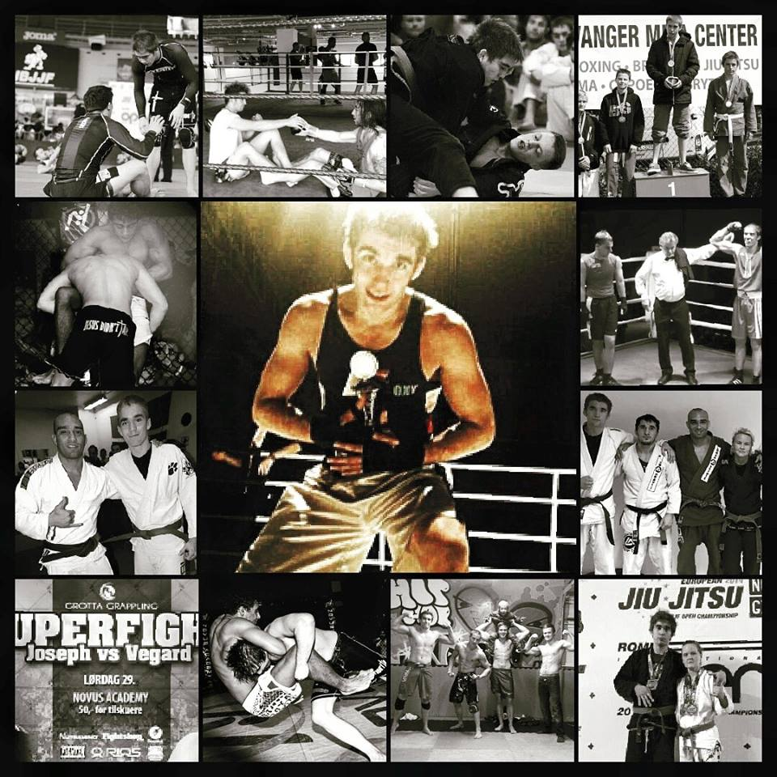
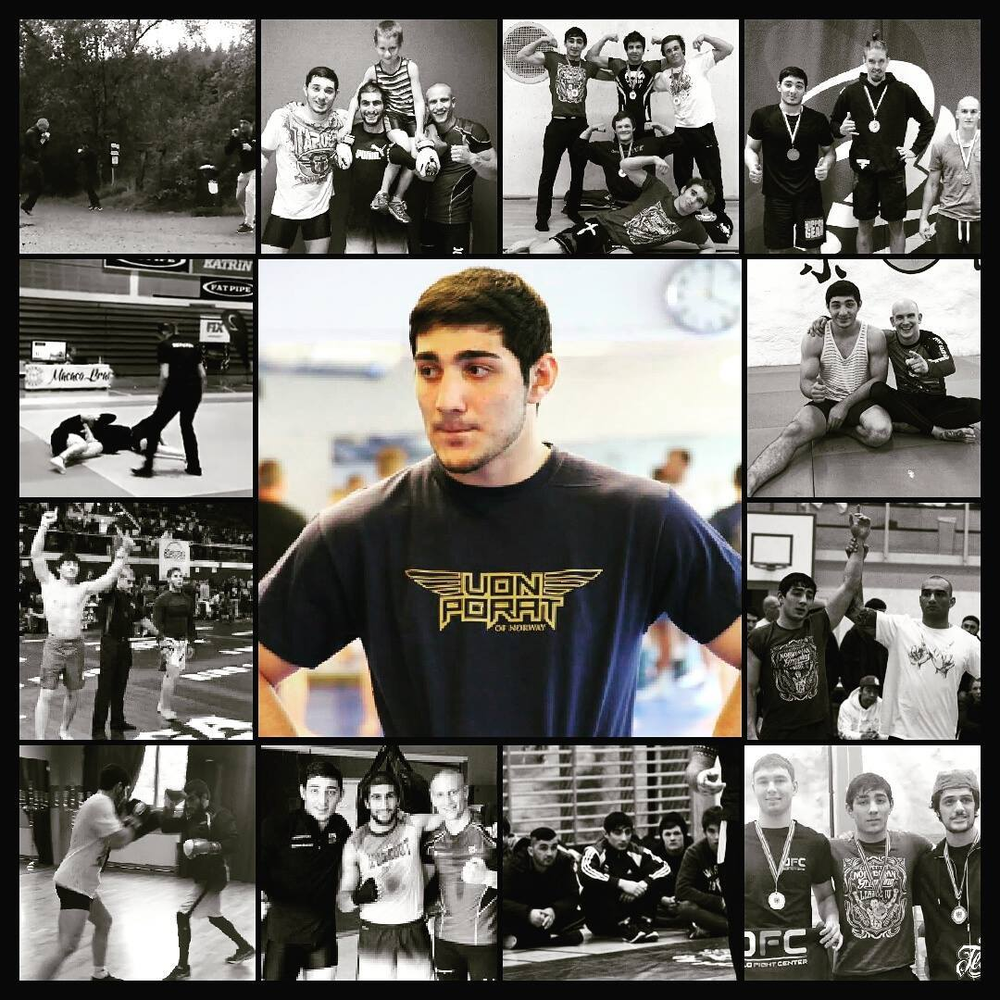
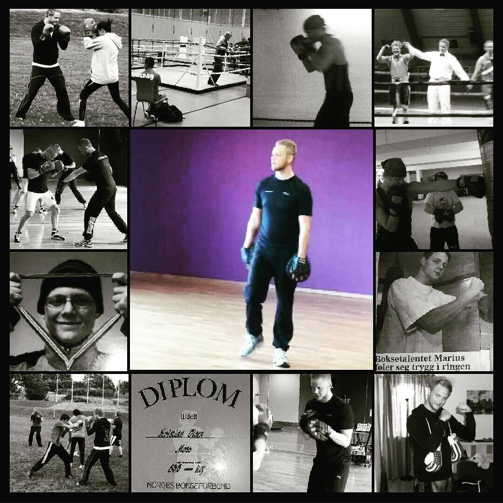

Herjers trenere:
Geir Kåre Cemsoylu Nyland
Herjer MMA er stolte av å presentere innhaver og hovedtrener Geir Kåre Cemsoylu Nyland (24). Interessen for kampsporten startet tidlig, allerede som 6-åring trente han judo i Stavanger og konkurrerte og graderte seg. Etter noen år flyttet han tilbake til hjembyen sin, Haugesund, og konkurrerte aktivt i kickboxing. Tilbake til Stavanger i 2010 begynte han å trene muaythai, hvor han hadde flere kamper som gav ham mersmak og god fortåelse for arten. Han ble også hovedtrener på MMA Senteret. Interessen vokste så Geir Kåre begynte å trene forskjellige arter som BJJ, nogi, boksing, judo,og bryting, hvor han også gikk noen kamper Dette gav ham masse erfaring og kunnskap som gjorde at han fikk øynene opp for en mer ultimat sport, nemlig MMA. Geir Kåre har reist rundt og hentet lærdom fra verdenskjente gym, blant annet Tiger Muaythai i Thailand. Han har også trent med kjente fightere som Martin Kampmann (UFC fighter) Ramon Dekkers (Tidenes største thaiboxer) og mange, mange fler! Han har nå 10 MMA-kamper og har vist en utrolig prestasjon. Tok Sølv i EM 2015 etter 5 kamper på 4 dager. Ikke nok med det, har han vist god fysikk og sterk psyke i realityserien "Norges Tøffeste" som han vant overlegent. Han ble utfordret i Vikingrace (hinderløype) der han tok en 4 plass mot elitegruppen som driver aktivt med sporten. Alt dette viser en rå atlet som vet hva han driver med! Geir Kåre tror på variert trening. Han sier at jo bedre du kjenner kroppen din, jo raskere lærer du nye bevegelser og teknikker.
Geir Kåre ble nyligt tatt ut til å være med på det norske landslaget i MMA. Neste mål nå er EM 2015 og VM 2016!
Vegard Randeberg
Herjer MMA er stolte av å presentere BJJ og MMA Trener Vegard Randeberg (21). Vegard var 14 år gammel da han satt foten sin inn på Stavanger MMA Senter, hvor han begynte å trene BJJ for fullt under tidligere verdensmester Felipe Mota. Grunnet den raske utviklingen, ble han sendt i kamp allerede etter bare 3 ukers trening. Vegard er en person som virkelig fordyper seg i det han driver med, noe som har gitt ham brunt belte i BJJ i en så ung alder. Han har utallige kamper både nasjonalt og internasjonalt. Populariteten til BJJ har eksplodert, noe som gjør konkurransen veldig tøff, men på tross av dette, kan ferdighetene og nivået til Vegard måles med de beste i verden. Det siste året har Vegard fokusert en del på boksing, og gått 6 kamper med veldig gode resultater (5 vinn og 1 tap). Dette har han flettet inn med BJJ- og Nogitreningen sin, som gjør at han har satt sitt fokus på MMA. Helt siden han begynte med kampsport, har han alltid hatt MMA i bakhodet. Dette har gjort at stilen han har utviklet, ikke bare er effektiv i BJJ og Nogi, men også rettet mot MMA bakkekamp. På grunn av det gode ryktet hans, ble Vegard oppringt av hovedtrener på MMA Landslaget for å delta på opptaket, hvor han bestod med glans! Hans neste mål er EM i 2015 og VM 2016 i Las Vegas, som blir arrangert av UFC! Vegard tror ikke på talenter, og mener det kun er hardt arbeid som skal til for å oppnå gode resultater. Han mener at alle kan få til det de vil, uansett forutsetninger. Vegard har alltid en plan med det han lærer vekk og er veldig pedagogisk.
Kasim Dudorkhanov
Herjer MMA er stolte av å presentere vår brytetrener Kasim Dudorkhanov! Kasim er bare 18 år gammel og er et ungt lovende talent i MMA, som er hans satsningsområde! Hans sterke base i kampsporten er fribryting, som han har konkurrert aktivt i siden han var 8 år gammel, i hjemlandet sitt Tsjetsjenia. Tsjetsjenia, har vist at de har noen av de beste bryterne i verden, på tross av at de er et lite land. De dominerer både i VM og OL med sin rå brytestil. Med dette er vi utrolig heldige med å ha en bryter med lærdom og kompetanse derfra. Kasim er sulten på å lære mer, og viser forbedringer etter hver kamp. Han har imponert i konkurranser med sin styrke fra den tøffe brytetreningen han har hatt. Med dette er han veldig ivrig til å lære vekk teknikker og øvelser som vil få deg i en god atletisk form! Kom og prøv en kjekk og utfordrende treningsform! Bryt med oss på Herjer MMA, som blir de første med dette tilbudet i Haugesund!
Kristian Olsen
Herjer MMA er stolte av å presentere vår boksetrener Kristian Olsen! Han er 29 år gammel og har drevet med boksing siden 12-årsalderen, og lever og ånder for sporten. Han er dyktig og erfaren med opp mot 70 kamper bak seg, og har 3 NM-titler! Kristian la hanskene på hylla ganske tidlig, pga satsing som trener, dommer og utdannelse innen naprapati! Han er forbundsdommer og nærmer seg 1000 dømte kamper, som er svært imponerende med tanke på alderen! Han har også erfaring innen planlegging og arrangering av flere boksestevner. Alt dette gjenspeiler hvor entusiastisk og engasjert han er for sporten. Målet som dommer og trener er å få stjerner i AIBA forbundet (internasjonalt bokseforbund), slik at han kan dømme i EM,VM og OL! Kristian har også som spesialist på typiske skader innen kampsport og trening, holdt foredrag for landslaget. Han har også utdannelse i funksjonell trening som vil gi de som trener hos oss en solid oppfølging! Kristian er mannen som tar boksingen til nye høyder her i Haugesund! Hans livsmotto er "Never give up"!